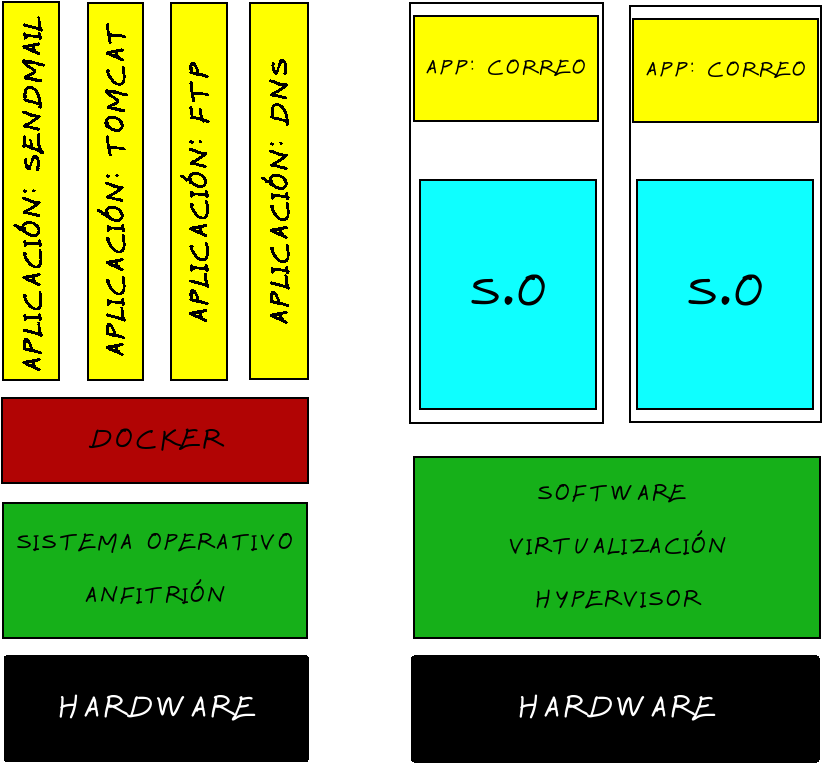

Docker es un sistema de virtualizacion que comparte con el anfitrión el kermel y el sistema de archivos.
El anfitrión es siempre un sistema Linux. Si estamos en Windows o Mac, necesitaremos una máquina virtual Windows virtualizada con VirtualBox o similar.
Un software de máquinas virtuales necesita instalar un sistema operativo completo. Ejemplos de sistemas de virtualizacion.
Un software de contenedores es un sistema de virtualización que comparte kernel con el anfitrión. Se basa en el concepto de microservicio, donde renfo todos los programas instalados, configurados y funcionando, gracias a los contenedores. Ejemplos de contenedores:
Para saber más sobre el tema:
Un Dockerfile es una receta para crear una imagen para una palicaión particular de Docker . De este modo podemos tomar una imagen base, insertarle programas, configurar esos programas y dejarla preparada para crear contenedores a partir de ella.
Veamos un ejemplo:
# Use phusion/baseimage as base image.
FROM ubuntu:latest
# Use baseimage-docker's init system.
CMD ["/sbin/my_init"]
# Install prerequisites
RUN apt-get update; \
apt-get install -y udhcpd
# Set up start up scripts
RUN mkdir /etc/service/udhcpd
ADD udhcpd.sh /etc/service/udhcpd/run
RUN chmod +x /etc/service/udhcpd/run
# Clean up APT when done.
RUN apt-get clean && rm -rf /var/lib/apt/lists/* /tmp/* /var/tmp/*
# Expose the port
EXPOSE 67
EXPOSE 67/udp
EXPOSE 68
EXPOSE 68/udp
# Volumes
VOLUME /data
La línea FROM ubuntu:latest sirve para indicar la imagen base que queremos usar para nuestro contenedor.
CREAMOS EL ARCHIVOS udhcpd.conf
# The start and end of the IP lease block
start 172.17.0.200
end 172.17.0.210
# The interface that udhcpd will use
interface eth0
opt dns 192.168.18.3 8.8.8.8
option subnet 255.255.0.0
opt router 172.17.0.1
# opt wins 192.168.10.10
# option dns 129.219.13.81 # appended to above DNS servers for a total of 3
option domain local
option lease 864000
CREAR EL CONTENEDOR:
docker build .
LANZAR EL CONTENEDOR: docker run -d --net=host -p 67:67 -p 67:67/udp -p 68:68 -p 68:68/udp --name=dhcpd -v "RUTA AL DIRECTORIO udhcpd"/data ubuntu:latest
ABRIR TERMINAL EN CONTENEDOR: docker exec -ti NOMBRE_CONTENEDOR /bin/bash